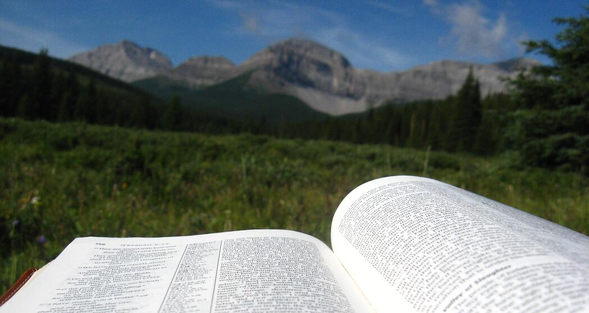

A Little About Us...
Blue Bronna Wilderness Camp is a not-for-profit organization. BBWC runs two sites south west of Calgary. One is on the Willow Creek 12kms west of the Chain Lakes on Hwy 532, the other is located at Coat Creek on Hwy 940.
The focus of Blue Bronna has always been sharing the power and majesty of God through a wilderness camping experience. Join us for the adventure of your choice to get away from the busyness and distractions of life so that you can experience the beautiful mountains and nature around you while enjoying peace and serenity of a wilderness adventure.
Central to life at camp is the goal to bring people face-to-face with God through time spent learning the Bible and through programs and activities that focus on time spent in God's creation.
We have found that when we leave our comfort zone of every day life and participate in adventures that bring us into contact with God's creation, we are provided with opportunities for God to speak into our lives through the things he has made.
Taking this time also slows down the pace of life so that there is extra time available to go to the Bible and discover what God has to teach us there.
We know from our own lives that the reconciliation Jesus offers to this world brings a peace, joy and contentment to our lives that is beyond any understanding! Our desire is that you would find that same peace as you begin to discover who Jesus is and as you consider whether or not you would like to follow after Him, accepting His offer to make us right with God.